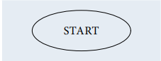
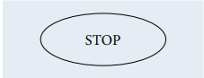
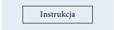
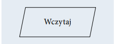
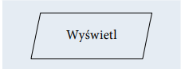
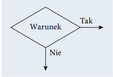
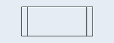
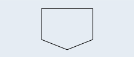

T02 - Zasady programowania
Autor: Jakub Pieniężny
Język programowania - służy do tworzenia programów komputerowych, których zadaniem jest przetwarzanie danych, wykonywanie obliczeń i algorytmów. Może zawierać
konstrukcje składniowe do manipulowania strukturami danych i zarządzania przepływem sterowania. Niektóre języki programowania mają specyfikację swojej składni
i semantyki, inne zdefiniowane są jedynie przez oficjalne implementacje.
Elementy języka:
- Składnia
zbiór reguł opisujących sposób definiowania struktur danych, rodzaje
dostępnych słów kluczowych i symboli oraz zasady, według których symbole mogą
być łączone w większe struktury.
- Semantyka
zbiór reguł definiujących znaczenie słów kluczowych i symboli oraz
ich funkcji w programie.
- Typy danych
dostępne typy danych, ich właściwości oraz operacje, które mogą
być wykonane na wartościach danego typu
Paragmaty Programowania
Paragmaty Programowania to pewien wzorzec określający sposób pisania i wykonania
programu komputerowego. Języki programowania korzystają z różnych paradygmatów.
Paradygmaty programowania opisują między innymi programowanie:
- strukturalne
- obiektowe
- proceduralne
- funkcyjne
- uogólnione
Skryptowe Języki programowania
Język skryptowy to język programowania służący do wykonywania wyspecjalizowanych czynności. Języki skryptowe są tworzone z myślą o interakcji z użytkownikiem.
Często są wykorzystywane do zadań administracyjnych. Bywają również osadzane
w programach w celu zautomatyzowania powtarzających się czynności. Są używane
do tworzenia dynamicznych stron internetowych. Stosowane w grach komputerowych
służą do sterowania przebiegiem gry.
Proste algorytmy
Algorytm to zestaw ściśle określonych czynności prowadzących do wykonania pewnego
zadania. Określa sposób rozwiązania problemu i ma zastosowanie w różnych dziedzinach. Języki programowania to narzędzia, które bardzo dobrze nadają się do zapisu
algorytmów. Aby napisać dobry program komputerowy, należy opracować skuteczny
algorytm i zdefiniować dla niego odpowiednie struktury danych.
Reprezentacja algorytmów
Schematy blokowe
| Symbol |
Opis |
|  |
Początek algorytmu, start programu. Od tego miejsca
rozpoczyna się wykonywanie operacji. |
|  |
Koniec algorytmu, zakończenie programu. W tym miejscu
następuje zakończenie wykonywania operacji. |
|
Połączenie między blokami. Wskazuje kolejność wykonywania
operacji |
|  |
Wykonanie operacji, blok obliczeniowy. Wewnątrz tego symbolu
znajdują się operacje do wykonania. |
|  |
Wprowadzanie danych. Wewnątrz tego symbolu określamy dane
wejściowe, które muszą zostać wczytane. |
|  |
Wyprowadzanie danych. Wewnątrz tego symbolu określamy
dane wyjściowe, które powinny zostać wyprowadzone jako
wynik. |
|  |
Warunek logiczny, blok decyzyjny. Umożliwia tworzenie rozgałęzień w algorytmie. Jeżeli warunek jest spełniony, to następuje
przejście do gałęzi oznaczonej „Tak”, w przeciwnym razie następuje przejście do gałęzi oznaczonej „Nie”. |
|  |
Proces wstępnie zdefiniowany. Symbol ten oznacza dołączenie
podprogramu. |
|
Łącznik. Odwołanie na stronie. Służy do oznaczenia miejsc
łączenia schematu, na przykład gdyby linie łączące na schemacie
musiały się krzyżować. |
|  |
Łącznik międzystronicowy. Służy do oznaczenia miejsc łączenia
schematu, gdy nie mieści się on na jednej stronie. |